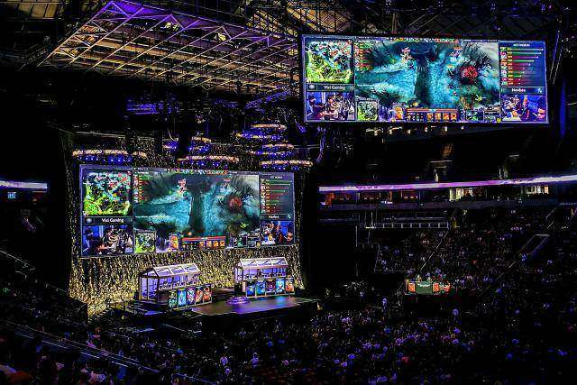

Я всегда любила игры
Мир видеоигр взял надо мной интерес с самого детства
С самого детства я видела как моя мама играет в игры разного жанра на PS 1, а я с восхищением наблюдала за этим со стороны и думала как это захватывающе и интересно.
Если сейчас брать в расчет моих любимых игр, то абсолютным победителем в этой категории является DOTA 2.
- Первый полноценный раз погружения в видеоигры произошел когда мне было 5 лет, мама разрешила мне поиграть в "Crash Bandicoot", и с того момента видеоигры являются неотъемлемой частью меня.
- С 2016 года активно участвовала в боевых кубках по дисциплине "DOTA 2", сейчас они распространены как киберспортивные соревнования.
- Определенного любимого жанра у меня нет, игра может быть абсолютно любой, но она должна захватывать, удивлять своим сюжетом, запоминаться яркой и современной графикой, а также оставить после полного прохождения положительные эмоции!
- Я играю в игры разного времени, вышла она несколько месяцев назад, или 20 лет назад, это не имеет для меня значение, потому что для каждого человека есть что-то любимое и родное в определенной игре.
- Следующая страничка!